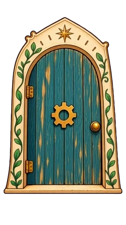

Paths of Wonder · Animation test
A real door opening.
Ludo’s first Can Opener test. The left preview shows it on a book; the larger version shows the movement and artwork more clearly. This is a review sample, not installed in the app.
The Can Opener

PATHS OF WONDERGenerated preview resolution
No automatic looping or audio. Use Play to start; the door remains open at the end. Faster playback is a preview choice, not an app change.
What to look for
Does the swing feel natural? Does the arch stay still enough? The generated art is softer than the original, and the open pose does not exactly match our approved painting. Those need review before replacing the production reveal.
Original video · Animated GIF · Generation notes
Higgsfield comparison was not generated: the connected free workspace does not have the required Kling entitlement. The Ludo test cost 9 credits.